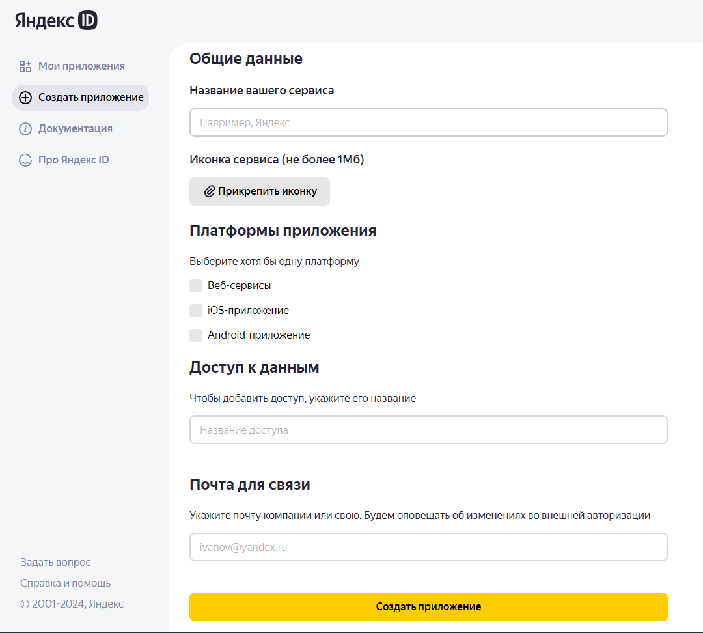
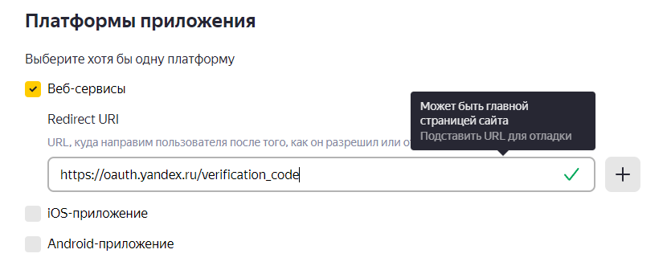
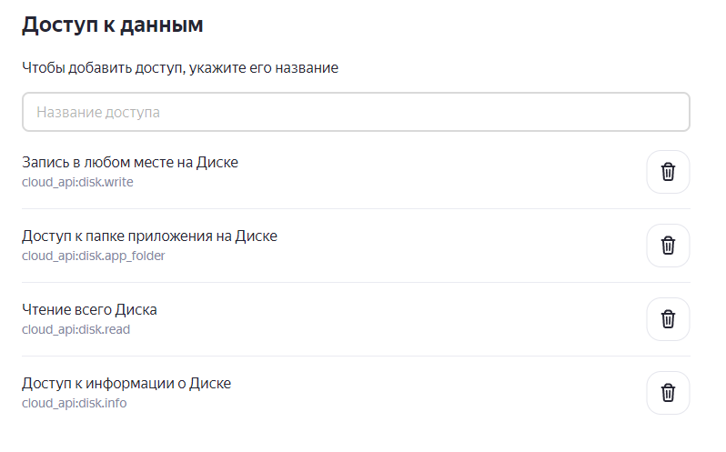
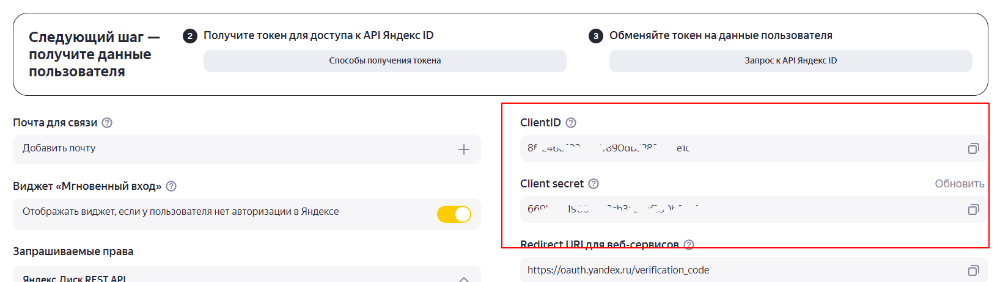
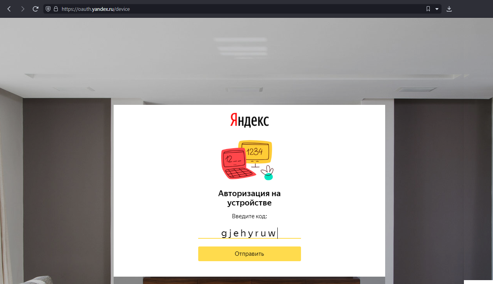

![]()
Яндекс Диск
Этот раздел посвящен библиотеке для работы с Яндекс Диск API в 1С:Предприятие, OneScript и CLI. На данной странице описаны все действия, необходимые для полноценного начала работы
Начало работы
Для начала работы необходимо получить токен доступа к диску:
- Перейдите на страницу создания приложения

- Введите название сервиса, выберите Веб-сервисы в качестве платформы. Redirect URI можно указать любой или выбрать пункт Подставить URL для отладки - для работы с библиотекой он не понадобится.

- В поле Доступ к данным добавьте разрешения как на скриншоте ниже, после чего нажмите Создать приложение

- Сохраните ClientID и Client secret со страницы приложения

- Вызовите функцию OPI_YandexID.ПолучитьКодПодтверждения(), передав ClientID в качестве параметра. Она вернет ответ сервера Yandex, где будут поля:
- user_code - необходимо будет ввести в браузере
- device_code - необходимо будет передать в другую функцию
- verification_url - URL, который нужно открыть в браузере
Результат функции ПолучитьКодПодтверждения(), если перевести его в JSON
{
"verification_url": "https://ya.ru/device",
"user_code": "gjehyruw",
"interval": 5,
"expires_in": 300,
"device_code": "12207cafec1b40ad8d0052af3faf0d12"
}
- Откройте URL из verification_url в барузере. Скорее всего это будет https://ya.ru/device. В появившееся поле введите user_code из пункта 5

- После ввода кода в пункте 6, вызовите функцию OPI_YandexID.ПреобразоватьКодВТокен(), передав туда ClientID и ClientSecret из пункта 4, а также device_code из пункта 5. Сохраните полученные acess_token и refresh_token
Результат функции ПреобразоватьКодВТокен(), если перевести его в JSON
{
"token_type": "bearer",
"refresh_token": "1:Tj6nD2vgE2L8jwSm:YgWjQXPv6_y3e07GW70ig2AOyEXoRVsKKpApGHq2EOg7pfx0MKrXiCrfLBFtzgQawdawdwadad3Sasa9z2H0vSeZKNmZmA",
"expires_in": 31535956,
"access_token": "y0_AgAAAABWxxdkAAs0QgAAAAD59cawdawdwadadVKIiwGK__crw"
}
acess_token используется во всех остальных функциях библиотеки, а при помощи refresh_token его можно обновить, когда срок жизни будет подходить к концу (при помощи функции ОбновитьТокен())